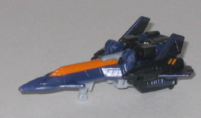
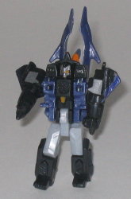
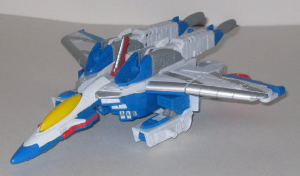
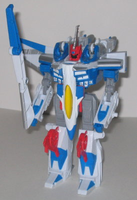

Gunbarrel
Ramjet
w/ Thunderclash and Air Military Minicon Team (Toys "R" Us Exclusive)
Gunbarrel
Ramjet
w/ Thunderclash and Air Military Minicon Team (Toys "R" Us Exclusive)
(NOTE: Because this set is a repaint, this is not a full-blown review. This mainly covers any changes made to the set and the color scheme, and merely compares them to their original respective sets. For a review on the original Air Military Team, go here . For a review on Armada Skywarp w/ Thunderclash- the mold that Ramjet & Thunderclash are based on- go here .)
Set Price : $20 (U.S.)
Gunbarrel
Allegiance
: Minicon
Size
: Mini-Con
Difficulty of Transformation
: Very
Easy
Color Scheme
: Gray, rusty red, and
some light gray, black, and silver
Rating
: 6.3
This version of Gunbarrel
is the EXACT same as the Armada version. No changes whatsoever. Some have
said that his gray may be a shade darker, but I don't see it. A complete
waste of a perfectly good repaint.
No mold changes have
been made to Gunbarrel, either.
Terradive


Allegiance
: Minicon
Size
: Mini-Con
Difficulty of Transformation
: Easy
Color Scheme
: Black, purple, light
gray, and some silver and orange
Rating
: 8.2
Terradive is the only
one of Ramjet's Minicon partners that is different enough to warrant new
pictures, and even then, just barely so. The original's light blue has
been replaced with purple, and most of his silver apps are now orange.
No other changes, though. I actually like it a little better than the original's
color scheme- black, purple, silver, and orange always go well together,
I say. Some have said his color scheme was meant to be a homage to
Skywarp
,
but I think that's more of a coincidence of mold color choices than anything
else. It's a nice toy by itself, but not a nice repaint when you see how
it's still so similar to the original Terradive.
No mold changes have
been made to Terradive.
Thunderwing
Allegiance
: Minicon
Size
: Mini-Con
Difficulty of Transformation
: Very
Easy
Color Scheme
: Dark gray, dull gold,
purple, and some black
Rating
: 7.1
Thunderwing is essentially
the same as his Armada version, only his color scheme has been made darker
overall; his gray is several shades darker, and his blue is now more of
a dull purple. Oh, and the gold paint app on his nosecone is gone. So it's
basically as if you're looking at the original Thunderwing, only under
poor lighting. Big whoop. Again, he's a nice toy himself, but it's still
a complete waste of a repaint.
No mold changes have
been made to Thunderwing.
Thunderclash
Allegiance
: Minicon
Size
: Mini-Con
Difficulty of Transformation
: Very
Easy
Color Scheme
: Light gray, blue,
and some black and bright orange
Rating
: 7.1
Thunderclash is another
of Ramjet's partners that's almost exactly the same as the original version;
his light purple parts are now blue, and that's it. And I thought the purple
looked better anyway, so it's both inferior to the original AND a crummy
repaint. How nice.
No mold changes have
been made to Thunderclash.
 Ramjet
Ramjet


Allegiance
: Decepticon
Size
: Ultra
Difficulty of Transformation
: Medium
Color Scheme
: White, blue, light
gray, and some silver, yellow, and light red
Powerlinx ports
: 3 (1 gimmicked)
Rating
: 8.2
Ah, here we go. Ramjet
is the only one in this Value Pack that is different enough to be worthy
of purchase, albeit he is the main figure in the pack. Other than being
primarily white, though, he's not really related to G1 Ramjet's color scheme
in any other way. Ramjet's color scheme is pretty much light all over,
here; that might have been nice for a happy little Autobot, but it doesn't
work very well for a Decepticon, unfortunately, especially one as evil-looking
as the Skywarp mold. In addition, his Decepticon symbols are, oddly enough,
not painted; it's as if this guy's TRYING to hide that he's a bad guy or
something. Anyways, he certainly does have his good points; I think the
silver paint apps on the wings are very nice-looking, as well as the ones
on his chest. The light gray also works well with the blue and white, although
the blue itself I think should have been darker, if the color had to be
used at all. One more weird oddity on Ramjet is that all his red coloration
is painted on; even those pieces that are solid red. Why they just didn't
mold those parts as red in the first place is beyond me, especailyl since
this particular shade of red paint is kinda cheap and looks like it could
wear off over time. He also still has that darned "misaligned legs" problem
that Armada Skywarp had, albeit to a lesser degree.
No mold changes have
been made to Ramjet.
Ramjet himself is still a pretty good toy, even though I think his color scheme could be better. It's the sheer laziness of his Minicon "repaints" that really gets to me. Why didn't they include those super-cool, flame-decoed paint jobs on the Minicons that were on the back of the box? It boggles the mind... But he's $20 for $27 worth of toys, so if you don't have the Air Military Team and/or like the Armada Skywarp mold a lot, I'd recommend him. Otherwise, you're better off passing this Value Pack up.
No Stats
Review by Beastbot